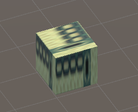
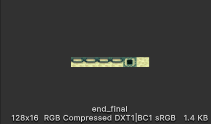
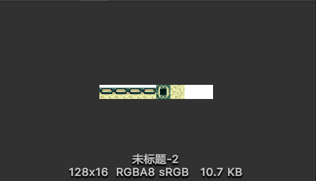
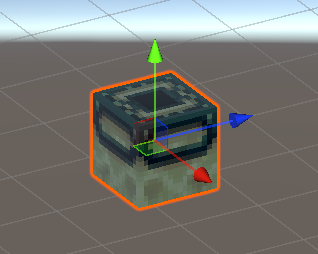

背景
我的大三下学期选了一门课是《计算机图形学》，这是一门考查课，老师要求最后交一个大作业即可。在询问了老师之后，老师说可以使用Unity或者UE做一个小游戏。我在此之前是没有任何游戏开发的经验的，所以打算使用unity来简单的做一个场景。恰巧这段时间，宿舍的其他同学迷上了MC，而且我本身也是MC的忠实玩家，所以打算复刻一个MC里的地牢场景，并且尽量实现其相应的功能（末地传送门的激活，传送等）。
问题及解决方法
所遇问题
大家使用过unity的应该知道，如何想给一个cube贴图，只需要把图片放到项目中，然后直接拖动挂载到scene中的cube上就好。采用这种方式，就可以在搭建好地牢的基本框架，并且完成一些石砖部分的贴图了。但是，当我想要给末地传送门框架进行贴图时，就出现了问题，原来的16x96像素的图片会被压缩，然后贴到cube的每一个面上，产生的效果如下，这样显然是不对的。

为了解决这个问题，我在网上查阅资料，并且借助ChatGPT的帮助，通过使用UV坐标的方式很好的解决了。
1
2
3
4
5
6
7
8
9
10
11
12
13
14
15
16
17
18
19
20
21
22
23
24
25
26
27
28
29
30
31
32
33
34
35
36
37
38
39
40
41
42
43
44
45
46
47
48
49
50
51
52
53
54
55
56
57
58
59
60
61
62
| using System.Collections;
using System.Collections.Generic;
using UnityEngine;
public class UVCube : MonoBehaviour
{
private MeshFilter mf;
public float tileSize = 0.125f;
private void Start()
{
ApplyTexture();
}
public void ApplyTexture()
{
mf = gameObject.GetComponent<MeshFilter>();
if (mf)
{
Mesh mesh = mf.sharedMesh;
if (mesh)
{
Vector2[] uvs = mesh.uv;
uvs[0] = new Vector2(0f, 0f);
uvs[1] = new Vector2(tileSize, 0f);
uvs[2] = new Vector2(0f, 1f);
uvs[3] = new Vector2(tileSize, 1f);
uvs[16] = new Vector2(tileSize * 1.0001f, 0f);
uvs[19] = new Vector2(tileSize * 2.0001f, 0f);
uvs[17] = new Vector2(tileSize * 1.0001f, 1f);
uvs[18] = new Vector2(tileSize * 2.0001f, 1f);
uvs[10] = new Vector2((tileSize * 2.0001f), 1f);
uvs[11] = new Vector2((tileSize * 3.0001f), 1f);
uvs[6] = new Vector2((tileSize * 2.0001f), 0f);
uvs[7] = new Vector2((tileSize * 3.0001f), 0f);
uvs[20] = new Vector2(tileSize * 3.0001f, 0f);
uvs[23] = new Vector2(tileSize * 4.0001f, 0f);
uvs[21] = new Vector2(tileSize * 3.0001f, 1f);
uvs[22] = new Vector2(tileSize * 4.0001f, 1f);
uvs[8] = new Vector2(tileSize * 4.0001f, 0f);
uvs[9] = new Vector2(tileSize * 5.0001f, 0f);
uvs[4] = new Vector2(tileSize * 4.0001f, 1f);
uvs[5] = new Vector2(tileSize * 5.0001f, 1f);
uvs[14] = new Vector2(tileSize * 5.0001f, 0f);
uvs[13] = new Vector2(tileSize * 6.0001f, 0f);
uvs[15] = new Vector2(tileSize * 5.0001f, 1f);
uvs[12] = new Vector2(tileSize * 6.0001f, 1f);
mesh.uv = uvs;
}
}
else
{
Debug.Log("No mesh filter attached");
}
}
}
|
当我使用之后，却发现了一个很奇怪的事，就是当我把一个16x96的图片拖到unity项目中时候，会自动被拉伸成128x16的大小。而128x16大小的图片拖到项目里就不会发生变化。


因为MC里的方块每一面的大小是16x16像素，所以在把末地传送门框架的六个面拼好之后，又在后面接了一个32x16的透明图片，这样在我们的脚本中，平均分为8份之后（所以函数中tileSize取的是0.125），前六份的大小是正常的，分别贴到cube的六个面，后面的两份就丢弃，其作用仅仅是为了防止原图片被拉伸。
最后的原图以及效果图如下：
